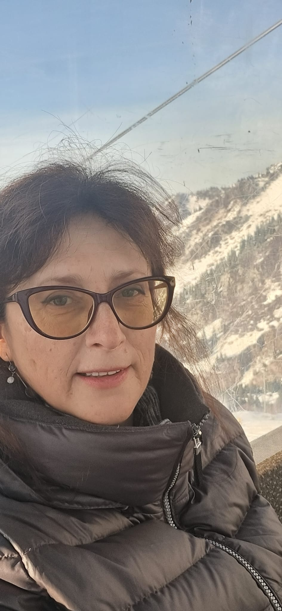
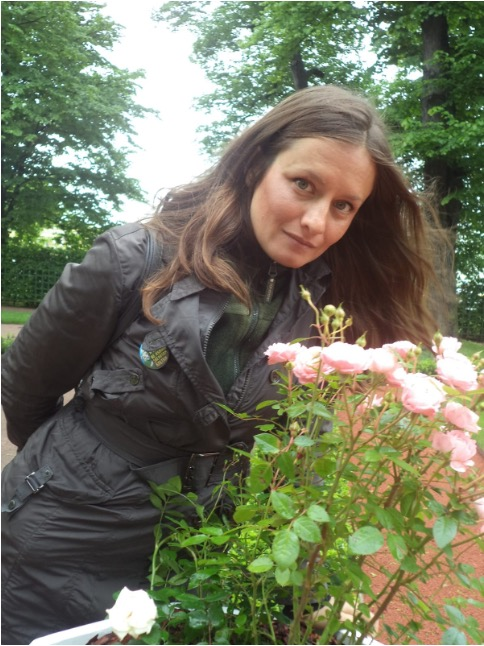
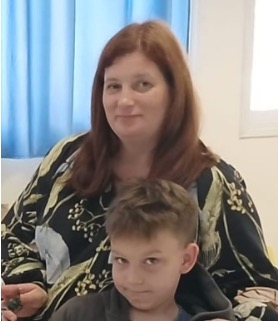
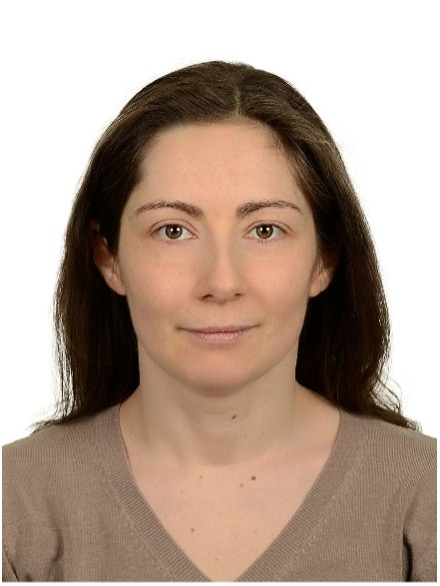

בלה ניקיטינה
חברת מועצת תנועת "רה-חיפה", סוציולוגית סביבתית, PhD
תחומי התמחות: ממשל סביבתי, כלכלה מעגלית, ניהול פסולת מוניציפלית, מדיניות משאבים, השתתפות ציבורית, סוציולוגיה ציבורית, מחקר יישומי והערכת תוכניות.
ניסיון מקצועי: למעלה מ־25 שנות ניסיון במחקר, בהוראה ובעבודה אנליטית בצומת שבין האקדמיה לבין העשייה הציבורית. בלה ניקיטינה היא עמיתת מחקר במרכז לחקר משאבי טבע וניהול סביבתי באוניברסיטת חיפה. היא ערכה למעלה מ־50 מחקרים יישומיים ופרסמה יותר מ־70 פרסומים אקדמיים ומקצועיים, ובהם מונוגרפיות וספרי לימוד.
ניסיון בעבודה עם ארגונים: שיתפה פעולה עם אוניברסיטאות ומרכזי מחקר ברוסיה ובאירופה, עם גופי ממשל אזוריים ועם ארגוני חברה אזרחית במחוז סמארה שבפדרציה הרוסית, והשתתפה בפרויקטים שנתמכו על ידי MacArthur Foundation, IREX ו־Russian Foundation for Basic Research.

אנה זיו
חברת מועצת תנועת "רה-חיפה", רכזת פדגוגית, פעילה סביבתית
תחומי התמחות: חינוך סביבתי, צריכה בת-קיימא, ארגון והנחיית אירועים סביבתיים, פיתוח קהילות עירוניות, שיתופי פעולה בין-מגזריים וניהול פרויקטים של מתנדבים.
ניסיון מקצועי: מייסדת ומתאמת של יוזמת GreenMove לקידום אורח חיים אקולוגי. מארגנת ומנחה סדנאות, מבצעי איסוף פסולת מופרדת ואירועי חינוך. משתמשת באופן פעיל ברשתות חברתיות לקידום נושאים סביבתיים.
ניסיון בעבודה עם ארגונים: שיתפה פעולה עם מוסדות עירוניים וארגונים חינוכיים. עבדה עם מלכ"רים ועם קהילות במסגרת תוכניות לחינוך סביבתי ומעורבות ציבורית.

טטיאנה פרומינה
חברת מועצת תנועת "רה-חיפה", לוגיסטיקאית, פעילה חברתית
ניסיון ברוסיה: אקטיביזם חברתי, פיתוח קהילות מקומיות, סביבה עירונית נגישה, תשתיות מכלילות, אורח חיים מקיים, פרקטיקות של שימוש חוזר בחפצים, יוזמות סביבתיות עירוניות והתארגנות ציבורית עצמאית.
ניסיון בעבודה עם ארגונים: ברוסיה טטיאנה עסקה בסוגיות של נגישות התחבורה והתשתיות העירוניות עבור קבוצות אוכלוסייה עם מוגבלות בניידות, שיתפה פעולה עם רשויות מוניציפליות ולקחה חלק בפיתוח קהילה מקומית שמנתה למעלה מ־1,000 משתתפים. בישראל היא המשיכה בפעילותה הציבורית לאחר שסיימה קורס לאקטיביזם חברתי בחיפה והשתלבה בשולחנות עגולים סביבתיים וביוזמות עירוניות. בין תחומי פעילותה המעשית נמנים ארגון Swap Market ופורמטים קהילתיים נוספים המחזקים תרבות של צריכה מקיימת ועזרה הדדית אופקית.

אלכסנדרה צייטלינה
חברת מועצת תנועת "רה-חיפה", מנהלת פרויקטים, פעילה סביבתית
תחומי התמחות: ביו-אקולוגיה, חינוך סביבתי, פיתוח בר-קיימא, תכנון מכליל לשימור טבע, ניטור ציבורי, אנליטיקה סביבתית והדמיית נתונים.
ניסיון מקצועי: עובדת בתחום שמירת הטבע למעלה מ־15 שנה. תיאמה פרויקטים של WWF, Kolarctic CBC ומספר יוזמות הקשורות לשימור המגוון הביולוגי, חקר אצות ופיתוח תיירות בת-קיימא. בעלת מומחיות בדיווח סביבתי, בתקשורת עם ארגוני חברה אזרחית ובהנגשת נתונים מדעיים לקהל הרחב.
ניסיון בעבודה עם ארגונים: שיתפה פעולה עם רוספרירודנדזור, משרד משאבי הטבע של מחוז מורמנסק, שמורות טבע, מוזיאונים ומלכ"רים (רוסיה).